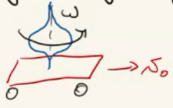
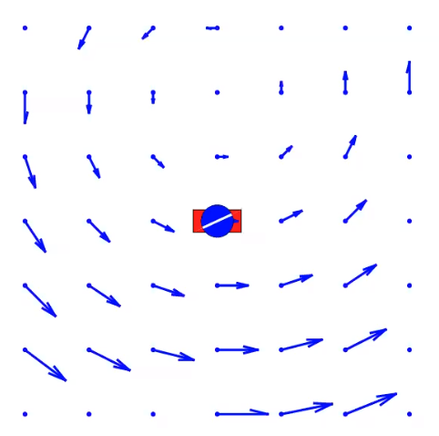

2. Single Body¶
2.1. Spatial Velocity¶
Spatial velocity is defined as a Vector Field. It is different then the conventional sense of velocity. Conventional velocity is defined as a single vector.
A good way to think of the spatial velocity is to think that the body extends to infinity in all directions. All points on body will have a certain velocity in the conventional sense. All these conventional velocity vectors create a vector field which we define as the spatial velocity.
Let’s continue with an example.
2.1.1. Spinning Top¶
We will use an example: spinning top on a cart to explain following sections.

Sketch (3-D side view)¶ |

Corresponding vector field for velocity (top view)¶ Note the vector field will change over time. |
2.1.2. Relationship between conventional velocities¶
Selecting 2 points A and B from the vector field of spinning top. Their velocities are related as following:
2.1.3. Spatial Velocity in Coordinates¶
As shown above, to get velocity of point B we only need . We can define B as any point in the vector space, then compute its velocity. That means is sufficient to uniquely define the vector field.
For rigid body motion assigning a coordinate frame to point A.
Attention
The set of vectors describing rigid body velocities is a 6-dim vector space.
As we write the spatial velocity as a 6-dim vector, we concatenate the linear and angular components. Their order verify from author to author, we use angular components first.
Example 1
The coordinate system such as the one in the above example is used to construct a basis which defines all possible rigid body motion. This basis is called as the Plücker Coordinates. Then using them, we can express the velocity in the example as following:
2.2. Transforming Spatial Velocity¶
Note
Check out Variable-Frame Notation
Consider a moving rigid body; two coordinate frames, A and B can be used to express its velocity. To transform between them:
{kind=link}
![^{B}v &=\
\begin{bmatrix}
^{B}w \\
\rule[.5ex]{1.5em}{0.4pt} \\
^{B}v_B
\end{bmatrix}
&=\
\begin{bmatrix}
^{B}R_A & \rule[-1ex]{0.5pt}{2.5ex} & 0 \\
\rule[.5ex]{5em}{0.4pt} & & \rule[.5ex]{2em}{0.4pt} \\
^{B}P_{A/B} \times\ ^{B}R_A & \rule[-1ex]{0.5pt}{2.5ex} & ^{B}R_A
\end{bmatrix}
\begin{bmatrix}
^{A}w \\
\rule[.5ex]{1.5em}{0.4pt} \\
^{A}v_A
\end{bmatrix}
&=\
\begin{bmatrix}
^{B}R_A & \rule[-1ex]{0.5pt}{2.5ex} & 0 \\
\rule[.5ex]{5em}{0.4pt} & & \rule[.5ex]{2em}{0.4pt} \\
S(\ ^{B}P_{A/B}) ^{B}R_A & \rule[-1ex]{0.5pt}{2.5ex} & ^{B}R_A
\end{bmatrix}
\begin{bmatrix}
^{A}w \\
\rule[.5ex]{1.5em}{0.4pt} \\
^{A}v_A
\end{bmatrix}
&=\
^{B}X_A
\begin{bmatrix}
^{A}w \\
\rule[.5ex]{1.5em}{0.4pt} \\
^{A}v_A
\end{bmatrix}
=\ ^{B}X_A\ ^{A}v](../_images/math/16bc25bea0c031778a3c0ebe37c154cfb679a045.svg)
We obtained which allows a change of basis from Plucker coords with respect to frame A to frame B. Meanwhile we also defined to replace cross-product, for clarity. (Cross product)
2.3. Moving Frames¶
{kind=link}
where the first term stands for coordinate axes moving; and the second term for the change in coordinates.
Note
is meaningful without coordinates. We say this operation is coordinate invariant.
Considering the drawing above, we could compute as following:
So, it does not matter much where the computation is performed. It is easy to change/assign a coordinate frame.
2.4. Spatial Acceleration¶
Just like spatial velocity, spatial acceleration is a vector field and it is equal to
Similar to spatial velocity, spatial acceleration is defined by a 6-dim vector space.
Consider Example 1, its spatial acceleration is 0 everywhere. Considering frame O is inertially fixed:
in which
First three components give angular acceleration.
Last three give rate of change in flow of body-fixed particles through {O}.
Example 2
2.5. Spatial Cross Product¶

Here we introduced as the spatial cross product.
In frame O:
In frame A:
Attention
As seen in two samples above: spatial cross product is coordinate invariant.
Note
Note the structural similarity with the Moving Frames.
The first term accounts for the moving coordinate; second term for the changing coordinates